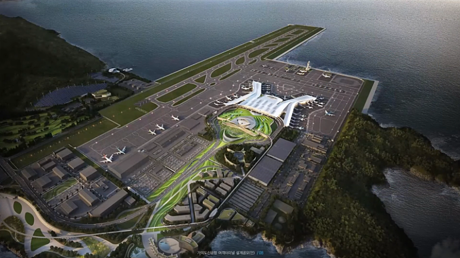
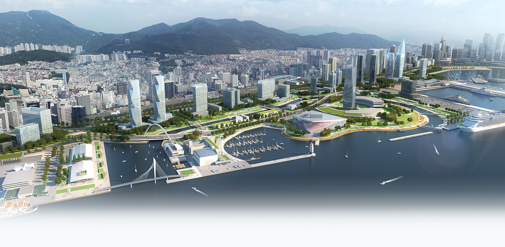

ISSUE 01
가덕도 신공항 : 부산의 새로운 하늘길
핵심 키워드
#2030년조기개항
#24시간여객물류
#글로벌물류허브
새로운 하늘길, 부산의 지도를 바꾸는 여정
부산의 백년대계를 이끌 가덕도 신공항은 2030년 조기 개항을 목표로 하는 국가적 프로젝트입니다.
주요 목표
2030년 조기 개항 및 안전한 24시간 운영 체계 구축

ISSUE 02
북항 재개발 : 시민의 품으로 돌아오는 항만
핵심 키워드
#해양관광거점
#친수공간확보
#원도심재생
해양 수도 부산의 새로운 랜드마크
노후된 항만 기능을 재편하여 비즈니스, 관광, 문화가 결합된 글로벌 거점을 조성합니다.
주요 목표
1단계 친수공간 완공 및 2단계 자성대 부두 재개발 본격 추진